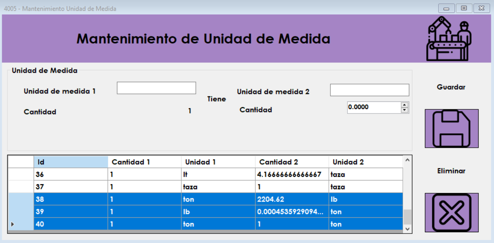

Pantalla de Inicio
Se presenta el area de unidades de medida para que pueda almacenar las conversiones respectivas segun asigne en sus insumos.
Ingreso de Unidad de Medida
Debemos ingresar la unidad de medida numero 1 que para este ejemplo será "1 tonelada" en libras que corresponde a "2204.62" posteriormente deberá dar clic en guardar y se crearan 3 registros como se ve en la imagen con las conversiones correspondientes.

Eliminar
Dado que se quiere evitar al maximo los errores en la produccion, es necesario que un registro mal ingresado se elimine y no se modifique, puesto que este puede coacionar daños en el sistema de producción.
Errores
Podemos encontrar los siguientes errores.